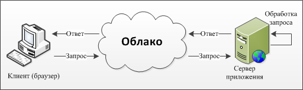

| Навигация | Содержимое | Последние статьи |
ГлавнаяJava SEJava WEBAndroid |
Java WEBПри разработке WEB приложения можно использовать одну из наиболее популярных технологий, к которым следует отнести Java Servlets, Java Server Page, PHP, ASP.NET, Node.js. В статье приводятся преимущества и недостатки данных технологий при разработки Web приложения.Web приложения реализуют бизнес-логику на стороне сервера и генерируют код для клиента. Т.е. клиент, как правило, является тонким, без каких-либо серьезных ресурсов обработки информации на сервере. Также у всех этих приложений одинакова архитектура взаимодействия сервера и клиента и общий протокол взаимодействия - HTTP. Схематично логика работы WEB приложения представлена на рисунке.  |